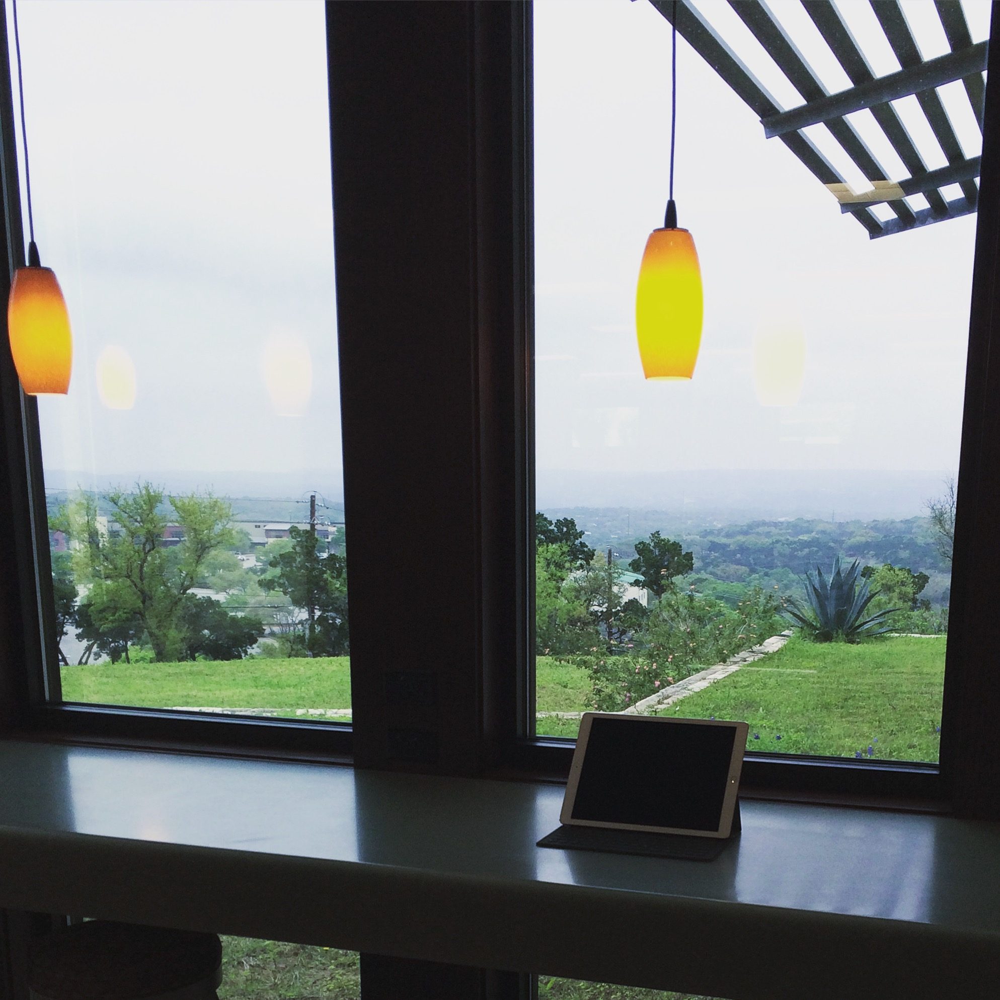

Author Archives: manton
Tickets for Release Notes 2016
I’m registered for the Release Notes conference, coming up later this year in Indianapolis. This will be the only conference I attend this year outside of another ticketless WWDC week. If you didn’t go last year and want to know more about it, check out the web site or listen to episode 151 of their podcast.
One of my favorite blog posts on this site from last year was my review of the conference, because I think it both described the conference itself and also captured that inspired feeling you get when you’re heading off to the airport and your head is buzzing with ideas. And because it’s a blog, where I allow myself to be informal, it also has the meandering narrative of the everyday — a stop for coffee, a conversation with an Uber driver. My memory of the conference wouldn’t be complete without those things.
I’m looking forward to visiting Indianapolis again. I may also look at flying into Chicago and taking the train down, then flying out. Sounds like some people did that last year, and I think it would make a great start considering the venue at Union Station. We’ll see if the schedule works out.
I’m back southeast to work from Ruiz Branch for the morning. Very nice library, built in 2004, with plenty of tables that look out to the field and trees.
→ 2016/04/04 10:29 amBooks rule
Working from a library on the weekend is a lot more difficult than a quick stop for coffee was. Because last Sunday we walked up to a Little Free Library, I’ll make that a weekend tradition in these 30 days. Just got back from exchanging a book at another Little Free Library nearby.
→ 2016/04/03 8:01 pmTesla Model 3
John Gruber, writing about the Tesla Model 3 unveiling:
The crowd enthusiasm was palpable. Tesla took over 115,000 pre-orders before anyone had even seen the car. That is trust — and rather incredible for a car that they don’t intend to ship until the end of next year.
At the beginning of the presentation, Elon Musk references his “master plan” blog post, where he outlined Tesla’s plan to start with the luxury market and then use that money to build a less expensive car, and then use that to build an even more affordable car. That blog post was 10 years ago.
Vision takes time to execute. It’s incredible to reflect on the scope of what Elon Musk’s companies have accomplished. As I wrote about last year, Elon will be admired by my kids’ generation in the same way that mine was inspired by Steve Jobs.
Had to be south this morning, so working at the Austin Community College library on their Riverside campus. Hardly anyone here on a Saturday, so it’s very quiet and plenty of desks to sit with my iPad Pro. Charging my car in the parking lot, too.
→ 2016/04/02 11:10 amLately I’ve been carrying the iPad Pro in my hand or under my arm because I don’t have a good lightweight, iPad-sized bag. Today this backfired, as I left the library downtown and got caught in the rain. Just a little wet and the Smart Keyboard and iPad were fine, though.
→ 2016/04/01 2:54 pmCoffee shops in Portland
Following a similar pattern as my 30 days of coffee shops, my friend Jon Hays has started mapping out a challenge to hit a month of coffee shops in Portland. The twist on his visits will be to focus mostly on the east side of Portland, and to only have lattes. First post: Cathedral Coffee.
Jon is documenting the coffee shop visits on his new microblog. An indie microblog is a great framework for posting this kind of thing, without the overhead and pressure that many people feel when faced with writing full-length blog posts.
See also: the 500 latte photos project by Aron Parecki, which looks like it wrapped up at a (still impressive) 312 lattes; and Tiny Challenges, a site and podcast from Daniel Steinberg and Jaimee Newberry about trying something new each day for a month.
Found a nice corner on the 2nd floor of the Faulk Central Library to work this morning. It’s like having a downtown co-working spot, but without the monthly fee and I can’t bring a coffee to my desk.
→ 2016/04/01 11:04 amMiitomo and Wii Transfer
On episode 18 of my Timetable podcast, which I just published this morning, I mention the new Nintendo game Miitomo. Federico Viticci also wrote about it today:
I’ve been keeping an eye on Miitomo – I still don’t completely understand it, but I’m intrigued by the premise of a friend-based network with mini-games and the ability to collect coins. Those coins can then be used to claim rewards and redeem other Nintendo-related content such as games and customizations. I’m curious to see how Miitomo will perform outside of Japan.
For a several years between 2006 and 2010, I sold and actively worked on a little Mac app called Wii Transfer. It was the first time I realized that I could make a living selling Mac software, even though it didn’t always have great sales consistently by itself. To this day, one of the features I’m most proud to have ever written is the Mii export, which could sync Mii data over Bluetooth from the Wii remotes and render it to let you save your Miis as PNG files on your Mac.
I’ve often mused on Core Intuition that I stopped selling the app too soon. At one point I worked on a companion app to the Nintendo DS with similar themes, but didn’t ship it. And I considered building a version for iOS just with the Mii functionality.
From a blog post in 2012, announcing that Wii Transfer would no longer be available:
I’m retiring Wii Transfer to focus on my other apps. It’s not that it doesn’t sell; it still does. It’s just that it’s not an app I actually use anymore. By officially shelving the whole project, I hope to remove a psychological burden of sorts — to no longer worry that I’m ignoring an active product.
I’ll never know if it was a missed opportunity — a mistake for the direction of my indie business to stop selling something that people liked — or the right call to refocus around what I actually cared about. In any case, I’m glad Nintendo is doing something new with Miis. As I play with Miitomo, there’s a part of me that regrets not doing more with Nintendo-compatible software while I had a competitive head start.
Spurs playoff tickets, round 1, game 1: purchased. Very excited for the postseason.
→ 2016/03/31 11:38 amWorking south for a little while at the Manchaca Road Branch. May or may not have picked this library location so that I could get a coffee outside at Radio afterwards.
→ 2016/03/31 11:34 am“Our overarching goal is to maximize total customer happiness within the bounds of what is physically possible.” — Tesla Motors on the Model 3 rollout, which isn’t as easy to scale as software
→ 2016/03/30 1:29 pmChecking out the Pflugerville Public Library and happily surprised at how big it is. Lots of chairs, meeting rooms, reading area… even electric car charging in the parking lot. Not particularly quiet today, but a nice place.
→ 2016/03/30 12:03 pmSuch a gloomy morning in Austin, not feeling inspired to venture out to find a new library. Also forgot to plug my car in last night, so working a little while at Whole Foods while it charges. Free electricity in exchange for ordering an iced coffee is the best.
→ 2016/03/30 11:08 am512 Pixels on YouTube
Stephen Hackett loves old Macs. (And iPhones and iPods and Newtons.) His fascination with old Apple hardware and the passion to share it with a larger audience — many of whom weren’t around for the dark days when Apple was doomed — is one of the things I love most about reading 512 Pixels.
He’s slowly been expanding into video production with a channel on YouTube. The latest video covers the iPod Shuffle, the tiny iPod without a screen that Apple still sells. At just $49, it’s not much more expensive than a long USB-C cable and may be the best bargain in Apple’s lineup after the $399 iPhone SE. Stephen writes about the original Shuffle:
The first Shuffle was built like a glorified USB thumb drive. This new player was smaller than a pack of chewing gum, and built around the concept of shuffling your music. There was no need for a screen or a true clickwheel. If you wanted to listen to music in order, the switch on the back could be set to continuous playback.
Ah, nostalgia. One of the reasons I blog at all, and have been for 14 years now, isn’t so much for today’s audience but tomorrow’s. Even the most mundane blog posts take on new significance with a few years’ distance. Old technical topics have surprisingly poor representation on today’s web, as linkrot sets in.
I’m looking forward to what else Stephen has planned. I know from the Connected podcast that lately he has been trying to collect all the different original iMac colors. (Two other podcasts that are worth a listen for an additional trip down memory lane: The Record and Simple Beep.)
Get one thing done today
Natasha the Nomad has a post about prioritizing the “one thing” that has to be finished today, even if everything else slips:
When I wake up (or the night before), I think “What is the one thing that I can do today to feel like I had a successful day, even If I nothing else gets done today”. No matter what, I end up getting that one thing done.
I find this kind of approach really useful. Saying you’re only going to finish one thing is admitting the reality that for many days, if you’re unfocused or juggling too many tasks, there’s a lot of “work” but nothing gets done. When I work out of the house in the morning with my iPad Pro, my goal is equally simple: publish a single blog post. If I can take care of email, edit other draft posts, work on planning notes for a project, etc. — that’s great too.
Working from Laura Bush Community Library

The drive into the hill country a little was totally worth it to visit Laura Bush Community Library. Beautiful library with an incredible view. I’ve got my iPad Pro with me and plan to work here until lunch, just looking out the windows.
→ 2016/03/29 10:45 am